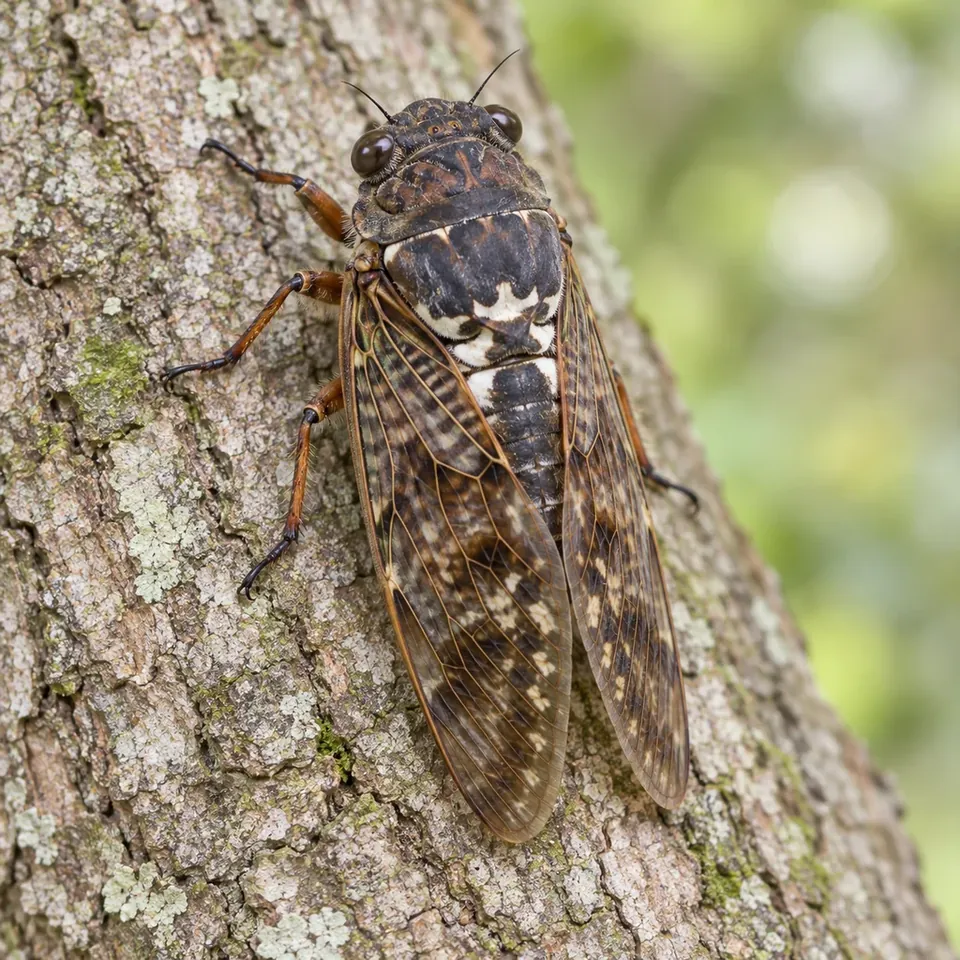

アブラゼミ
Graptopsaltria nigrofuscata

紹介
茶色く透けにくいはねを持つ、身近なセミです。夏の公園や雑木林で、オスがじりじりとした声を響かせます。成虫は木の幹に口を差し込み、汁を吸います。木の皮に似た色のため、鳴き声を頼りに探せます。
画像：AI-generated with OpenAI image_gen

Graptopsaltria nigrofuscata

茶色く透けにくいはねを持つ、身近なセミです。夏の公園や雑木林で、オスがじりじりとした声を響かせます。成虫は木の幹に口を差し込み、汁を吸います。木の皮に似た色のため、鳴き声を頼りに探せます。
画像：AI-generated with OpenAI image_gen